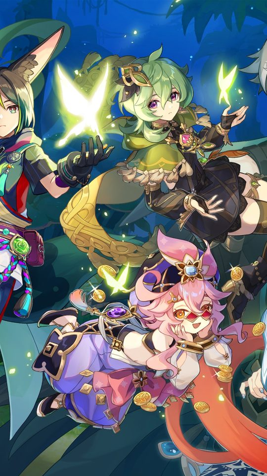
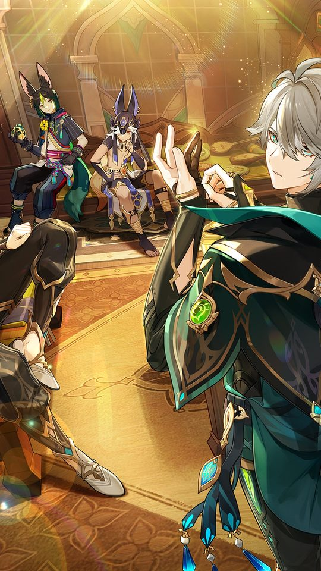
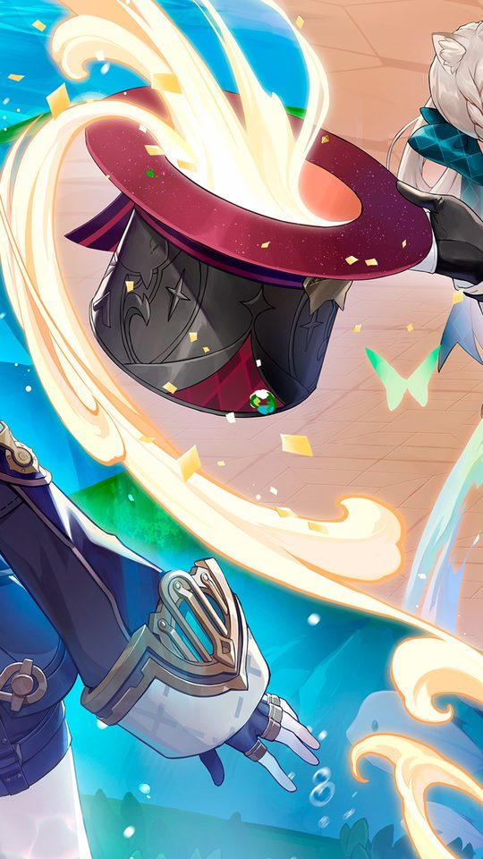
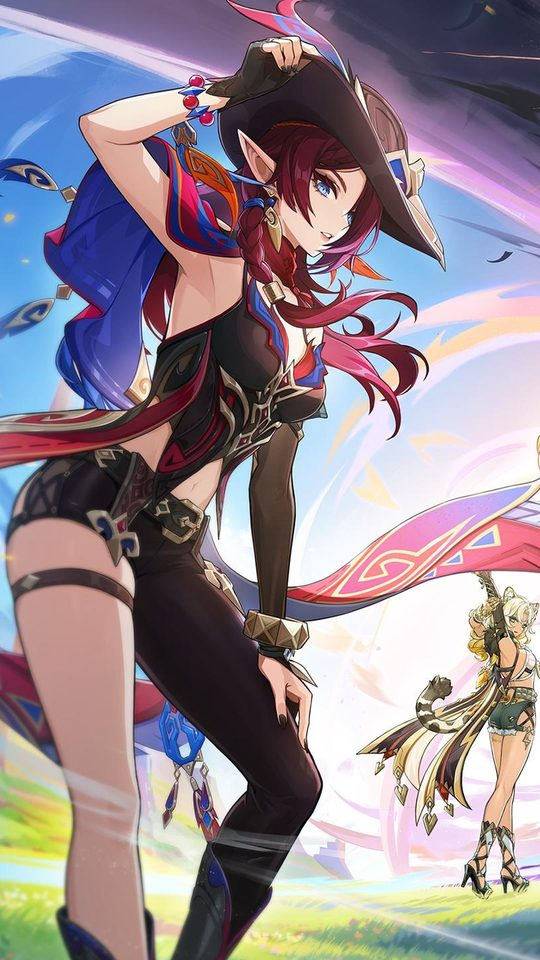

10 Best Anime Games on Android in 2026

There are more anime-style games on Android than anyone can reasonably try, so this list focuses on ten that are worth a look, with a plain reason to play each one, a rough idea of how much space it takes and whether it needs a constant internet connection. The aim is to help you decide what to install before you commit your storage, not to crown a single winner.
How to read this list
Sizes change with every update, so treat the figures below as rough starting points rather than exact numbers; most of these games grow as new content arrives. "Offline" here means you can play meaningfully without a live connection, and almost every anime gacha game needs to be online to log in even if parts of it are single-player.

Open-world and action games
Genshin Impact
Reason to play: a huge open world to explore at your own pace, with elemental combat and a cast built around anime art. The download is large, roughly in the tens of gigabytes once the world is fully installed, and it needs an internet connection to play.
Wuthering Waves
Reason to play: fast, fluid action combat with a strong anime look and a focus on movement. The download is again large and grows with updates. It is online only.
Tower of Fantasy
Reason to play: another open-world option with a shared world and plenty of exploration, and a sci-fi anime setting that separates it from the fantasy crowd. Large download, and online only.

Turn-based and strategy games
Honkai: Star Rail
Reason to play: polished turn-based combat, strong production values and a story told with care, with a cast you meet gradually rather than all at once. Large download, and online only.
Arknights
Reason to play: a tower-defence style strategy game with a distinctive art direction and thoughtful stage design. Moderate download, and online only.
Blue Archive
Reason to play: a light strategy and squad-building game with a bright, clean anime style. Moderate download, and online only.
Action and shooter games
Punishing: Gray Raven
Reason to play: quick, stylish action combat with a sci-fi anime setting and tight controls. Moderate download, and online only.
Nikke: Goddess of Victory
Reason to play: a cover-based shooter with anime character art and simple, satisfying combat. Large download, and online only.

Rhythm, story and collection games
Azur Lane
Reason to play: a side-scrolling shooter with a huge roster of characters to collect, and a surprisingly relaxed pace that rewards a few minutes a day. Moderate download, and online only.
Another Eden
Reason to play: a genuine single-player Japanese role-playing game with a time-travel story, closer to a classic console RPG than a live-service grind. Moderate download. This is the closest thing on the list to an offline-friendly game, though it still downloads updates and needs a connection for some features.

What to weigh before installing
The list is only half the decision. The other half is whether a given game fits your phone and your routine, and four factors decide most of that.
- Storage. Open-world games are the heaviest by far. If your phone is tight on space, turn-based and rhythm games are usually lighter.
- Connection. Assume a live internet connection is required for logging in, for events and for most rewards. Plan for it.
- Time per day. Turn-based games often suit short daily sessions, while open-world games reward longer play.
- Device heat and battery. The bigger the world, the harder your phone works. A mid-range device may run lighter, turn-based games more comfortably.
A sensible approach is to keep one large game and one or two lighter ones. That way you always have something to play without filling your phone or draining the battery on a single title.
None of these games is a bad choice; they simply ask for different amounts of space, time and attention. A game that looks stunning in a trailer is no use if it fills the last of your storage or needs an hour a day you do not have. Pick the one that fits the phone you actually own and the minutes you actually have, and you will enjoy it far more than chasing whatever is trending. Start with one, give it a fair week, and only then decide whether to keep it or try the next on the list.
Frequently asked questions
Are any anime games on Android fully offline?
Very few live-service anime games are fully offline, because they rely on servers for events and rewards. Another Eden is the closest to an offline experience on this list, as it is built around a single-player story, but it still downloads updates and needs a connection for some features.
Which anime game is the smallest download?
Turn-based, rhythm and collection games are generally lighter than open-world titles. Arknights, Blue Archive and Azur Lane tend to sit in the moderate range, while Genshin Impact and similar open-world games are the largest. Sizes change with updates, so check the store listing on your device.
Do these games run on mid-range phones?
Lighter, turn-based games usually run comfortably on mid-range hardware. Open-world action games demand more from the processor and can heat up smaller phones. Lowering graphics settings helps, but the heavy titles are best on a more capable device.
Do I need to spend money to enjoy them?
No. All ten can be played without paying, though the live-service ones pace their rewards around optional purchases. If you want a story you own start to finish, a single-player game like Another Eden avoids that pressure entirely.